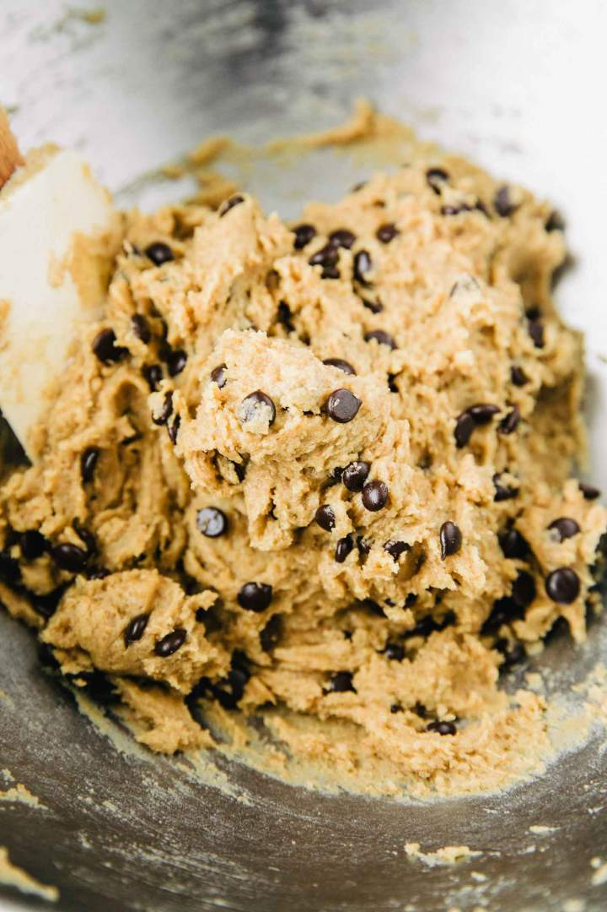
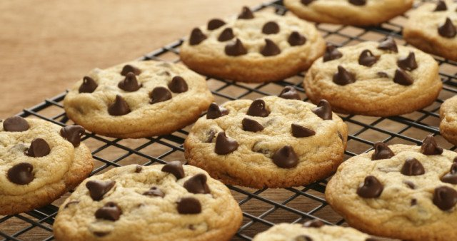

SESTAVINE:
POSTOPEK:
Sladkor in maslo penasto umešaj.
Nato dodaj vanili sladkor in jajce.
Vse skupaj na hitro premešaj, le toliko, da se jajce poveže v zmes.
Potem postopoma dodaj moko z pecilnim praškom, na koncu pa še čokolado.
Nato iz testa oblikuj krogljice.
PEČI NA 180 stopinj ZA 10-15 minut.
